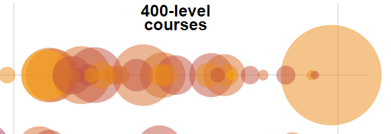
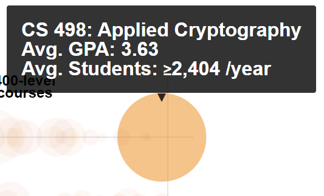

Over the last three years I've completed six classes at the University of Illinois Urbana-Champaign (pronounced like "ban" in the middle), clawing my way towards a Master's in computer science. A decent grade on this project will help wrap up my seventh class, leaving me with one final class to push through (God willing and the creek don't rise).
I've had a bad case of what I'll call impostor syndrome or genius envy ever since I started this program. My gut simply tells me that everyone else gets excellent grades with little effort, and that my struggles with anxiety and stress are unique. My brain has occasionally pushed back with a bit of logic and reason, but mostly to no avail.
One side effect of all this nonsense has been a slight obsession with my GPA and grades in general. At some point during my second year I reasoned that "good data can cut through any amount of emotional noise", so I asked a simple question:
How well do people actually do in all these classes?
A few Google searches led me to the answer:
In July 2016, the University of Illinois responded to a Freedom of Information Act request (FOIA #16-456 and others) for "the grade distributions by percent and/or letter grade, for every class [...] at the University of Illinois at Urbana-Champaign".
This dataset, now available on github, contains the breakdown of GPA for every course at The University of Illinois. As noted in the FOIA response, some data was withheld to maintain FERPA compliance.
This is a fascinating dataset that contains grade distributions for every class taught at Illinois over the last decade. The visualization is also impressive, providing a bird's-eye view of the number of students enrolled in each class along with the average GPA. Being a computer science student, I immediately moused over the entire range of CS classes. It didn't hurt that our classes are in the first row.
 When I got to the end of the row and moused over CS498, three things immediately occurred to me:
Applied Cryptography sounds complicated, but it could be a cool class. I should do a little research on it.
I'm pretty sure Applied Cryptography isn't the only class at the 498 level of the computer science curriculum.
There is a zero percent chance that over 2400 people take that class every year (on average).
This prompted my second big question:
What's going on here?
To answer that one, we need to take a look at how the dataset is structured. Every section, of every class, in every semester from the Spring of 2010 to the Winter of 2019/2020 has a record in the dataset represented by a row in a CSV file. Each row has a bunch of columns containing useful fields. Each field is described below:
| Column # | Field Name | Description |
|---|---|---|
| 1 | Year | The year the class was taught. |
| 2 | Term | The semester the class was taught. (Spring, Summer, Fall, or Winter) |
| 3 | YearTerm | An aggregate of the previous two that's easy to filter on. ("2019-sp", for example) |
| 4 | Subject | A short abbreviation of the subject in all caps. ("CS" for Computer Science, for example) |
| 5 | Number | The level of the class. ("498", for example) |
| 6 | Course Title | The full name of the class. "Applied Cryptography", for example. |
| 7 - 20 | "A+" to "W" | Each of these columns has a count of the number of people who received that grade. A+, A, A-, B+, B, B- C+, C, C-, D+, D, D-, F, W |
| 21 | Primary Instructor | The primary instructor of each class. Instructors can have multiple sections in a given semester. |
If we assume that the data had been filtered by the subject (CS), then the number (498). If multiple courses in a subject had the same number, they would be aggregated and then labeled with whatever class title showed up first. For CS498, if we assume the classes were sorted alphabetically, the label would end up being "Applied Cryptography."
Let's test those assumptions and look at some data:
Graph 1 shows the total number of students who took any CS498 class for each year those classes were available. The following blurb is from the page hosting the dataset and the original visualization:
The page is the result of the work of one team of students' work on this GPA dataset, using data from Fall 2016 through Winter 2019/20.
Here we can see that our original assumption about how the average student count for CS498 was calculated was wrong. No single year crosses the 2000 mark for enrollment, much less the average over the last four years.
For the sake of comparison, we can look at the enrollment for all 400 level CS classes in Graph 2. Now we're well above the expected average of 2400. For this particular question, however, the answer still eludes us and lies somewhere in the middle. I didn't have much time to look at the original author's code, unfortunately, so for this project it will stay a mystery.
I very much appreciate the original author's work, and acknowledge that the quantity of classes labeled 498 in the CS curriculum is puzzling. I also wanted to expand on the original visualization to help answer my original question:
How well do people actually do in all these classes?
For that, we need a more interactive version of the "circle graph" presented by the original author: